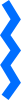
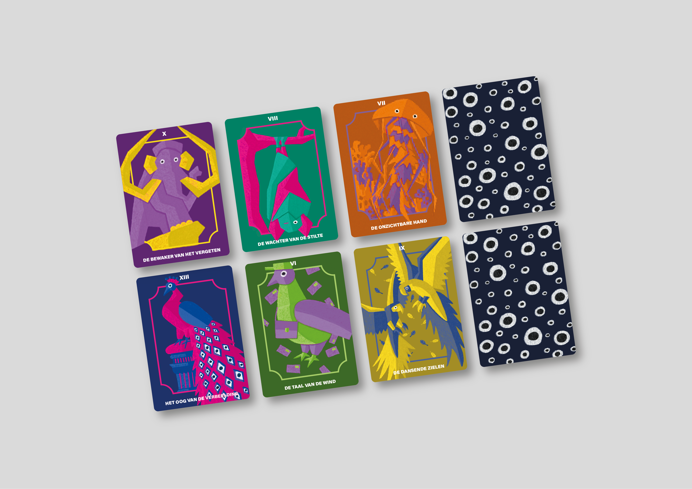
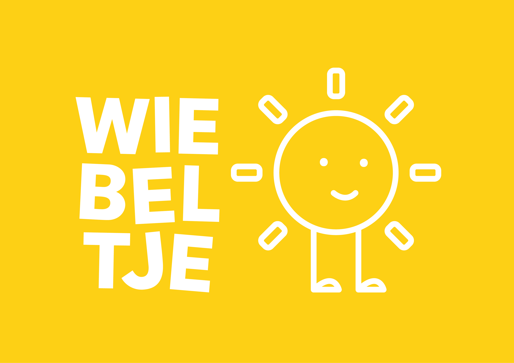
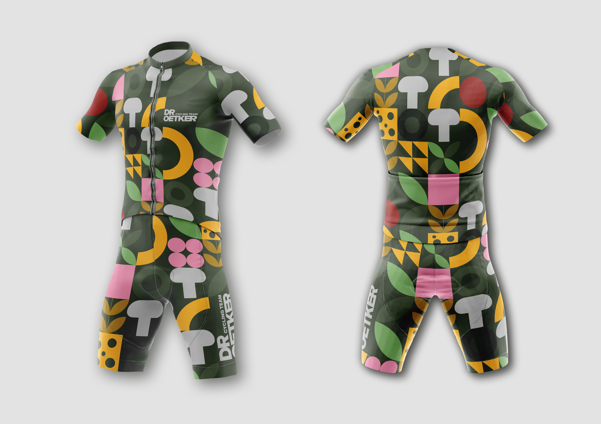
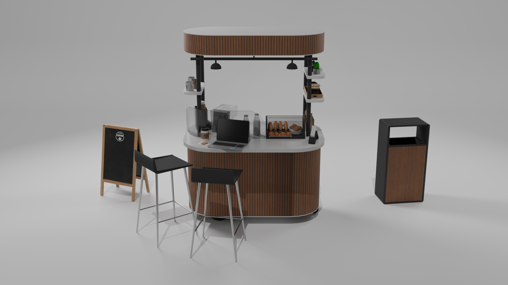
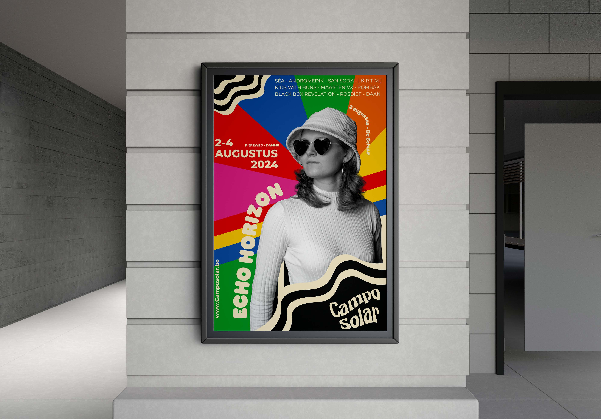

japanse poster
Een Japanse posterreeks van 3 posters die elk uniek zijn en passen binnen het bedrijf Satori.
Ik ben een gedreven student die de richting Digital Experience Design volgt aan de hogeschool Thomas More.



Een Japanse posterreeks van 3 posters die elk uniek zijn en passen binnen het bedrijf Satori.

De magische wereld van waarzeggers, iedereen interpreteert zijn kaarten anders.

Kinderopvang Wiebeltje organiseerde een wedstrijd om een nieuw logo te ontwerpen.

Een modern rebranding voor cyclingteam Dr.Oetker. Zonder al die sponsors en reclame.

Een 3D-eindproject voor het vak 3D Design I: het modelleren van een functionele, mobiel eetkraam op wielen in Blender

Rebranding van festival Campo Solar. De hele huisstijl van Campo Solar op zijn kop gezet.